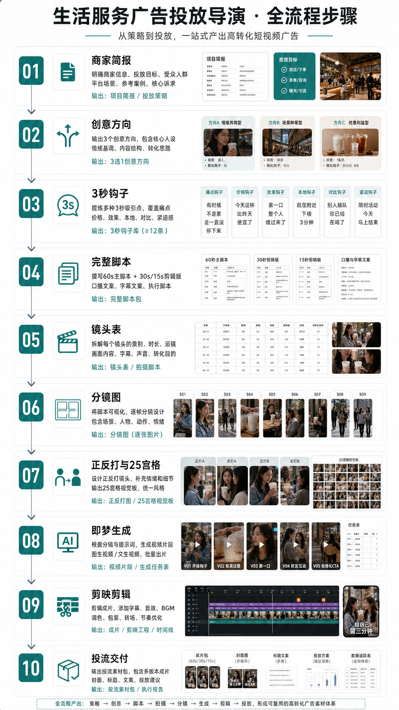

优先查看：自动粗剪预览
已在视频生成前暂停。当前交付为脚本、分镜、字幕、即梦任务表与复跑命令；充值后再生成真正视频。
状态摘要
Truestop_before_video
Falsehas_preview_video
9storyboard_frame_count
9subtitle_segment_count
0video_clip_count
5jimeng_task_count
逐镜头分镜图
参考风格变体视频
根据你给的 5月28日、5月29日 两种参考语法生成。
步骤图 / 流程图

项目简报
- 完成
00_项目简报.md - 完成
00_流程清单.md - 完成
00A_全流程步骤展示.md - 完成
00B_ViMax式制片调度.md - 完成
01_信息流投放策略.md
创意与镜头骨架
- 完成
02_创意方向_3选1.md - 完成
03_3秒钩子库.md - 完成
docs/镜头表与单元切分.md - 完成
docs/站位图.md - 完成
docs/关键帧Prompt_逐张拆分版.md - 完成
docs/Seedance_Prompt_逐单元.md
脚本
- 完成
04_60秒主广告脚本.md - 完成
05_30秒剪辑版脚本.md - 完成
06_15秒剪辑版脚本.md - 完成
07_口播与字幕文案.md - 完成
07A_完整执行脚本.md
镜头与拍摄
- 完成
08_镜头表与拍摄脚本.md - 完成
09_正反打镜头设计.md - 完成
10_拍摄执行清单.md
视觉设定
- 完成
11_人物设定.md - 完成
12_场景设定.md - 完成
13_道具服化与品牌露出.md - 完成
14_分镜图Prompt.md - 完成
15_正反打图片Prompt.md - 完成
16_25宫格视觉板Prompt.md
资产索引与一致性
- 完成
asset_index/asset_manifest.json - 完成
asset_index/reference_selection.md - 完成
asset_index/consistency_checklist.md - 完成
asset_index/frame_qc.md
即梦视频任务准备
- 完成
17_即梦视频生成Prompt.md - 完成
18_即梦批量生成任务表.csv - 完成
videos/manifest.json - 完成
videos/manifest.md - 完成
videos/dreamina_commands.sh - 完成
videos/retry_and_fallback_plan.md - 完成
24_视频生成暂停与复跑说明.md
剪辑与字幕
- 完成
19_剪映剪辑方案.md - 完成
20_剪映时间线.csv - 完成
21_封面标题与投流文案.md
投流交付
- 完成
22_投流素材变体方案.md - 完成
23_交付检查清单.md - 完成
99_执行状态.md
完整执行脚本节选
# 07A_完整执行脚本 片名：她只是想暂停三分钟 类型：原生情绪短片式信息流广告 规格：竖屏 9:16，60 秒 核心原则：前 40 秒像生活内容，最后 20 秒轻转化。不要让用户一眼觉得“这是广告”。 ## 完整脚本 ### 0-3s 画面：商场长椅边。女生坐着，手里拿手机，屏幕亮了一下。她没有马上回复，只是看着屏幕发呆。周围人流经过，略微虚化。 表演：不要哭，不要夸张疲惫，只是眼神空一下。 字幕：有时候不是累，是一直没停下来。 声音：环境底噪，远处商场广播很轻。没有口播或只用低声旁白。 剪辑：首帧不要出现饮品，不出现品牌。 ### 3-8s 画面：手机弹出朋友消息，画面只给到消息气泡感，不出现具体聊天软件界面。女生抬头，看向远处光线。 朋友台词/字幕：下来走走？ 旁白：朋友说，下楼走三分钟。 表演：她轻轻吸一口气，像终于从工作状态里出来。 剪辑：从手机光切到商场自然光。 ### 8-15s 画面：两个人并排走在商场里。只拍脚步、扶梯、玻璃反光、手从口袋里拿出来。不急着拍脸。 旁白：不用聊天，也不用解释。 字幕：就走三分钟。 声音：脚步声、商场环境声，音乐开始进入。 剪辑：慢一点，别像商品展示。 ### 15-23s 画面：取茶台。店员递出两杯饮品，只拍手、杯壁水珠、冰块。杯身可以自然入画，但不要做产品硬特写。 旁白：就买一杯清爽的。 字幕：给自己一点空隙。 表演：朋友接过一杯，顺手递给她。 剪辑：饮品第一次出现，保持自然。 ### 23-32s 画面：女生喝第一口。镜头停在她脸上 1 秒，她的表情从紧绷慢慢松开。朋友看她，轻轻笑了一下。 女生台词：嗯，好像缓过来了。 朋友台词：那就先别想了。 字幕：第一口下去，人才慢慢回来。 声音：吸管轻响，音乐稍微亮一点。 剪辑：这里是情绪转折点，节奏可以放慢。 ### 32-42s 画面：两个人坐在商场台阶或窗边，杯子放在中间。阳光照在杯壁上。她们不说话，只是看人来人往。 旁白：原来今天也没有那么糟。 字幕：暂停一下，也算继续生活。 表演：自然坐着，不摆拍。 剪辑：保留一两个安静镜头，让用户有代入感。 ### 42-52s 画面：手机又亮了，她看一眼，没有皱眉。手边的饮品自然在画面边缘。朋友站起来，示意回去。 旁白：如果你也刚好在附近，给自己留三分钟。 字幕：附近有店的话，先下单，下来取。 画面补充：可以闪过门店页/取茶提醒，但不要超过 1 秒。 剪辑：这是从内容转到转化的第一步，轻一点。 ### 52-60s 画面：两个人拿着饮品走回人群。最后一镜是背影，杯子自然垂在身侧。右下角出现轻 CTA。 旁白：附近门店可下单。活动与价格以门店及平台实时信息为准。 字幕：给自己留三分钟。 CTA 小字：点进附近门店查看
字幕节选
1 00:00:00,000 --> 00:00:03,000 有时候不是累，是一直没停下来 2 00:00:03,000 --> 00:00:08,000 朋友说，下楼走三分钟 3 00:00:08,000 --> 00:00:15,000 不用聊天，也不用解释 4 00:00:15,000 --> 00:00:23,000 给自己一点空隙 5 00:00:23,000 --> 00:00:32,000 第一口下去，人才慢慢回来 6 00:00:32,000 --> 00:00:42,000 暂停一下，也算继续生活 7 00:00:42,000 --> 00:00:52,000 如果你也刚好在附近，给自己留三分钟 8 00:00:52,000 --> 00:00:57,000 附近有店的话，先下单，下来取 9 00:00:57,000 --> 00:01:00,000 给自己留三分钟
执行状态节选
# 99_执行状态 执行日期：2026-05-29 已完成： - 已生成项目目录和全部交付文件。 - 已完成喜茶 60s / 30s / 15s 竖屏信息流广告脚本。 - 已新增可直接拍摄和剪辑的完整执行脚本：`07A_完整执行脚本.md`。 - 已根据用户反馈，把创意从明显硬广改为原生情绪短片方向：`她只是想暂停三分钟`。 - 已完成镜头表、分镜 prompt、正反打 prompt、25 宫格 prompt。 - 已生成实际分镜图：`images/storyboard/storyboard_native_9grid.png`。 - 已新增全流程详细步骤展示：`00A_全流程步骤展示.md`。 - 已生成全流程步骤总览图片：`images/step_cards/00_workflow_overview.png`。 - 已以喜茶为测试粒子生成逐镜头分镜图 `images/storyboard/S01.png` 至 `images/storyboard/S09.png`。 - 已以逐镜头分镜图跑通严格模式自动剪辑，生成 `exports/auto_cut_preview.mp4`。 - 已抽取预览帧 `exports/auto_cut_preview_frame24.png`。 - 已生成字幕包：`subtitles/subtitles.srt`、`subtitles/subtitles.ass`、`subtitles/jianying_subtitles.csv`、`subtitles/segments.json`。 - 已按 storyboard-orchestrator-video 的交付思路补齐结果展现层：`RESULTS.html`、`RESULTS.md`、`manifest.json`。 - 已根据用户提供的 `/Users/zhangye/Downloads/5月28日.mp4` 生成参考风格变体：`variants/0528_presenter_product/exports/auto_cut_preview.mp4`。 - 已根据用户提供的 `/Users/zhangye/Downloads/5月29日.mp4` 生成参考风格变体：`variants/0529_short_drama_conversion/exports/auto_cut_preview.mp4`。 - 已将两个风格变体写入 `RESULTS.html` 成果看板。 - 2026-06-05 根据用户要求，流程改为视频生成前暂停：已创建 `.stop_before_video`。 - 已补齐 storyboard-orchestrator 风格交付：`00_流程清单.md`、`docs/镜头表与单元切分.md`、`docs/站位图.md`、`docs/关键帧Prompt